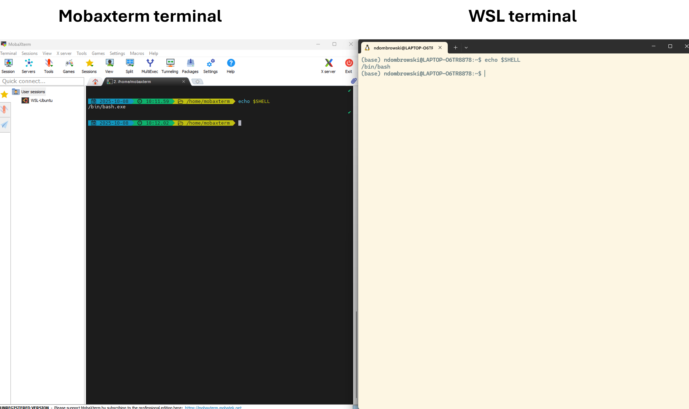

1 Setting up a terminal
1.1 Terminology
The command-line interface (CLI) is an alternative to a graphical user interface (GUI), with which you are likely more familiar. Both allow you to interact with your computer’s operating system but in a slightly different way:
- In a GUI, you click buttons, open folders, and use menus
- In the CLI, you type text to issue commands and see text output in the terminal
The CLI is commonly called the shell, terminal, console, or prompt. These terms are related but not identical:
- The terminal (or console) is the window or program that lets you type commands.
- The shell is the program that interprets the commands you type inside the terminal and tells the operating system what to do.
- A prompt is the text displayed by the shell that indicates that it is ready to accept a command. The prompt often shows useful information, like your username, machine name, and current directory. This is one example for how a prompt can look like:
user@machine:~$
There are several types of shells — for example, bash or zsh (that use slightly different languages to issue commands). This tutorial was written on a computer that uses bash, which stands for Bourne Again Shell.
1.2 Installation guides
1.2.1 Linux
If you’re using Linux, you already have everything you need and you don’t need to install anything. All Linux systems come with a terminal and a shell, and the default shell is usually Bash.
You can open a terminal from your applications menu or by searching for Gnome Terminal, KDE Konsole, or xterm, depending on your desktop environment.
To confirm which shell you’re using, type:
echo $SHELL1.2.2 Mac
All Mac computers also come with a built-in terminal and shell. To open the terminal:
- In Finder, go to Go → Utilities, then open Terminal.
- Or use Spotlight Search (⌘ + Space), type Terminal, and press Return.
The default shell depends on your macOS version:
- macOS Mojave (10.14) or earlier → Bash
- macOS Catalina (10.15) or later → Zsh
Check which shell you’re currently using:
echo $SHELLIf the output does not end in /bash, you can start Bash manually by typing:
bashThen check again with echo $SHELL. If you have trouble switching, don’t worry — nearly all commands in this tutorial will also work in Zsh.
1.2.3 Windows
Unlike macOS or Linux, Windows doesn’t include a Unix-style terminal by default, so you will need to install one of the following:
- MobaXterm (recommended)
- Provides a terminal with Linux-like commands built-in
- Installation guide: MobaXterm setup instructions
- Easiest option for beginners and lightweight to install
- Windows Subsystem for Linux (WSL2)
- Gives you a full Linux environment directly on Windows
- Recommended if you’re comfortable installing software or already have some command-line experience
- Uses Ubuntu by default, which includes Bash and all standard Linux tools
- Installation guide:Microsoft WSL install instructions
Once installed, open your terminal (MobaXterm or Ubuntu via WSL2) and verify that Bash is available:
echo $SHELL1.3 Sanity check
After setup, open your terminal and type echo $SHELL and press enter. You should see something like this:

If you see a prompt ending in $ (for example user@machine:~$), your shell is ready to go and you are all set to follow along with the tutorial!